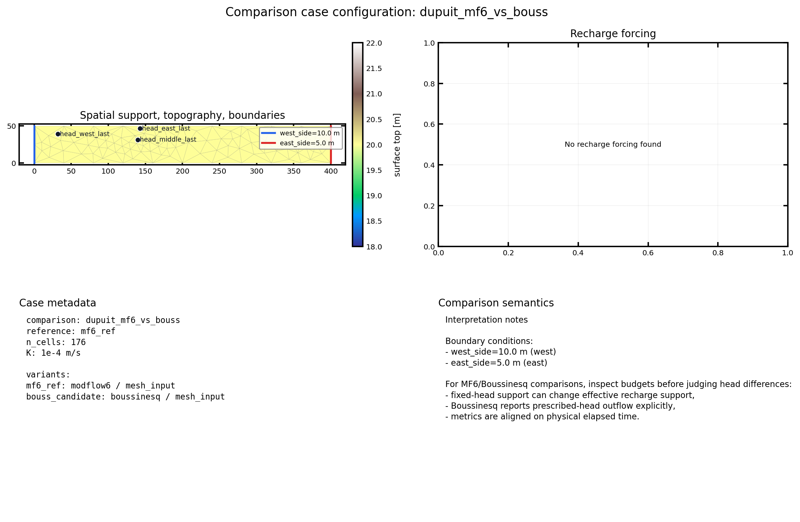
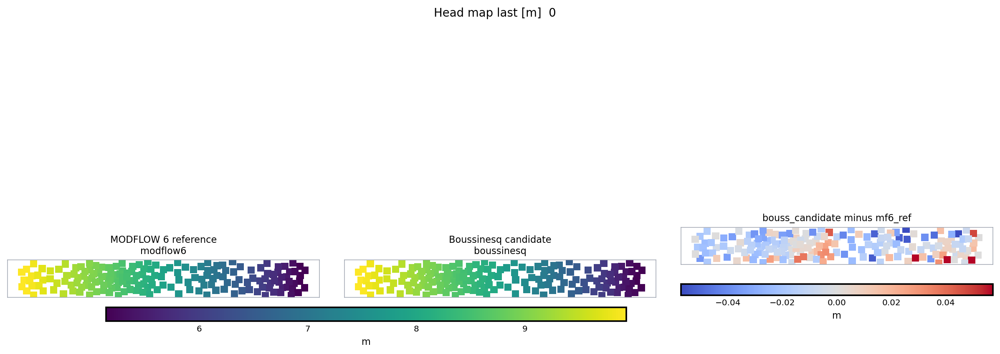

Comparison Workflow#
[workflow].mode = "comparison" creates several child simulations from one shared
base configuration and compares declared observables.
Use it when the question is: “If the physical case stays fixed, how do solver, mesh, or option choices change the outputs?”
Functional Role#
The comparison workflow is an external orchestration layer. It does not ask you to duplicate whole TOML files manually. Instead it:
base simulation TOML
-> child simulation overlays
-> generated child TOMLs
-> child hmp run executions
-> equivalence audit
-> observable extraction
-> metrics and differences
-> comparison figures and report
It is appropriate for:
MODFLOW 6 versus MODFLOW-NWT comparison;
MODFLOW 6 versus Boussinesq comparison;
structured versus irregular mesh experiments;
sensitivity to numerical options while keeping the base case stable;
producing stable comparison pages for documentation and teaching.
Typical Command#
Run a public example through the example helper:
python examples/projects/09_comparison_workflow/run_comparison_example.py --case synthetic --show
Or through the public CLI:
hmp run examples/projects/09_comparison_workflow/compare_dupuit_mf6_bouss.toml
Recommended First Cases#
The public example set already contains several useful starting points. Read them in this order when you discover the workflow.
Example |
Main comparison |
Why start here |
|---|---|---|
|
MODFLOW 6 versus Boussinesq on a synthetic shared mesh |
Smallest conceptual jump; best first case for understanding the workflow |
|
MODFLOW 6 versus MODFLOW-NWT on a natural structured case |
Useful when the question is backend migration without changing mesh family |
|
MODFLOW 6 versus Boussinesq on a natural saved triangular mesh |
Best entry point for shared-support comparison on an irregular mesh |
|
Same natural shared mesh, but with diffuse recharge activated |
Best next case when the question moves from geometry alone to forcing semantics |
|
Same natural shared mesh with one controlled transient recharge pulse |
Best first transient comparison when you want differences that stay interpretable |
|
MODFLOW 6 versus Boussinesq on the Nancon catchment with one saved river-constrained mesh and monthly recharge |
Preferred natural Nancon benchmark when you want a realistic case but still want aligned supports, aligned times, and explicit audit warnings |
|
MODFLOW 6 versus Boussinesq on a Nancon catchment setup with a synthetic weekly seasonal recharge chronicle |
More realistic transient stress test; the child runs regenerate their support from the same base TOML and the comparison audits the outputs |
Representative Results#
{kind=link}

Fig. 13 The configuration panel shows the shared physical case before any difference metric is interpreted as a solver effect.#
{kind=link}

Fig. 14 The triptych is the core comparison visual: reference, candidate, and difference are kept in one read order instead of split across separate files.#
Minimal Shape#
[workflow]
mode = "comparison"
[comparison]
comparison_id = "dupuit_mf6_vs_bouss"
base_simulation_config = "base_dupuit_shared_mesh.toml"
output_root = "outputs/dupuit_mf6_vs_bouss"
reference_simulation = "mf6_ref"
continue_on_error = false
[comparison.execution]
backend = "subprocess_hmp_run"
max_parallel_runs = 1
run_simulations = true
keep_generated_configs = true
[[comparison.simulation]]
id = "mf6_ref"
label = "MODFLOW 6 reference"
solver = "modflow6"
mesh_mode = "mesh_input"
[[comparison.simulation]]
id = "bouss_candidate"
label = "Boussinesq candidate"
solver = "boussinesq"
mesh_mode = "mesh_input"
[[comparison.observable]]
name = "head_map_last"
variable = "watertable_elevation"
support = "map"
time = "last"
unit = "m"
Important Parameters#
Section / field |
Role |
Practical guidance |
|---|---|---|
|
Selects the comparison launcher. |
Must be |
|
Names the experiment. |
Used in reports, output paths, generated child names, and metrics. |
|
Shared physical base case. |
Keep all common geometry, forcing, time, and physical assumptions here. |
|
Stores comparison artifacts. |
Use a dedicated folder, not a child simulation folder. |
|
Defines the baseline for differences. |
Pick the most trusted or conventional variant. |
|
Controls failure policy. |
Keep |
|
Controls child execution. |
|
|
Keeps generated child TOMLs. |
Keep enabled while debugging overlays and audit mismatches. |
|
Checks same-case consistency. |
Use |
|
Declares one child variant. |
Use overlays for solver-specific changes only. |
|
Declares what to compare. |
Prefer a small set of maps, points, and budgets before expanding. |
|
Optional common rasterization for map comparisons. |
Use it when comparing maps from different supports. |
Overlay Example#
Each child simulation can override a small part of the base TOML:
[comparison.simulation.overlay.modflow6.runtime]
mf6_ims_complexity = "SIMPLE"
mf_verbose = false
[comparison.simulation.overlay.modflow6.process_specific]
vka = 1.0
Keep overlays narrow. If two child simulations differ in geometry, forcing, time window, and solver at once, the comparison will be hard to interpret.
Observable Example#
[[comparison.observable]]
name = "head_middle_last"
variable = "watertable_elevation"
support = "point"
cell_index = 88
time = "last"
unit = "m"
Point observables are cheap and clear. Map observables are richer but usually need careful support alignment, especially when meshes differ.
Allowed Variant Overlays#
The current public contract intentionally limits what can change between child simulations. Allowed overlay families are:
generic simulation metadata,
solver selection and solver-specific options,
display options,
a narrow
flowoverlay used for runtime-backend selection.
Sections that change physics ([domain], [flow.bc],
[flow.sinks_sources]) are rejected. Cross the boundary by writing a
different base config rather than a forbidden overlay. If the physical
case changes too much between children, the result is no longer a clear
simulation comparison.
When To Use This Workflow#
Use it when the goal is:
backend comparison on one shared support,
structured-versus-irregular discretization comparison,
numerical-option sensitivity on one fixed physical case,
production of stable difference figures and metrics.
Do not use it as a substitute for:
a first learning walkthrough,
analytical validation,
a fully free-form multi-physics experiment where every child case changes physically.
What You Should Inspect First#
Read the artefacts in this order:
comparison_manifest.jsonfor traceability across all artefacts.comparison_audit.md(orcomparison_audit.json) to confirm the workflow still considers the child runs as one comparable case.comparison_report.mdfor reference variant, candidate variants, observables, and main outputs.comparison_figures/case_configuration.pngfor the orientation panel: mesh, topography (when available), detected fixed-head boundaries, point/outlet observables, and recharge forcing.comparison_metrics.csvandcomparison_differences.csvfor the bias, MAE, RMSE, and max-error quantification.comparison_figures/*triptych*.pngto locate the discrepancy spatially: reference field, candidate field, candidate-minus-reference.Child run outputs only if a metric needs explanation.
When the runs expose canonical hydrographic networks, also inspect
hydrographic_network_metrics.csv. If a variant is missing one of the
canonical roles, hydrographic_network_metrics_skipped.json records
the reason instead of silently dropping the export.
For the simulated active drainage signal, inspect:
simulated_active_network_metrics.csvsimulated_active_network_metrics_skipped.jsonsimulated_active_network_overlap_metrics.csvsimulated_active_network_overlap_metrics_skipped.jsonsimulated_active_network_distance_metrics.csvsimulated_active_network_distance_metrics_skipped.json
The first pair summarizes active-network occupancy from
accumulation_flux. The second pair compares that occupancy against
the observed reference network after rasterizing it onto the
simulation mesh. The third pair adds bidirectional cell-centroid
distances between active simulated cells and the same reference
network.
For transient MODFLOW 6 versus Boussinesq examples, inspect the budget
diagnostics before interpreting head metrics alone. The same physical
case can still expose solver-specific accounting semantics, for example
whether recharge is applied on fixed-head cells or exported as
prescribed-head outflow. The workflow writes
comparable_outflow_total_m3_s in the budget exports as
drainage_total_m3_s + surface_excess_total_m3_s and should be
preferred when the question is the total groundwater release rather
than the native mechanism that produced it.
When the Boussinesq run exposes lower-obstacle state histories, also
inspect boussinesq_obstacle_diagnostics.csv. It reports
min(h-z_bot), potential negative storage volume, active q_dry
cells, and surface-excess cells for each saved snapshot.
Each materialized comparison may also expose a browser-readable page at
web/index.html. Treat it as the standard access point for a first
review: it links the audit, metrics, key figures, flux dashboard, and
CSV exports without replacing the underlying machine-readable files.
Persisted child simulations still belong to the normal simulation
catalog; the comparison folder is indexed locally by
comparison_manifest.json.
If you want a strict reading order once the run is finished, continue with Comparison Output Reading Order.
Post-Run Stability Checks#
After a comparison has been materialized, use the stability checker when you want a quick non-regression answer without relaunching the solvers:
python examples/projects/09_comparison_workflow/check_comparison_stability.py
The checker reads the already written comparison outputs:
comparison_manifest.jsonfor completed variants,comparison_audit.jsonfor the accepted audit status,comparison_metrics.jsonfor explicit metric thresholds,selected files under
comparison_figures/.
Default targets live in
examples/projects/09_comparison_workflow/stability_targets.toml.
The first locked cases are:
dupuit_mf6_vs_boussfor a compact synthetic shared-mesh check,natural_mesh_10km2_transient_pulse_mf6_vs_boussfor the controlled transient pulse case,nancon_transient_seasonal_hydrography_mf6_vs_boussas a broad Nancon stress-test sentinel.
The Nancon target is deliberately loose. It is useful for detecting sudden regressions in a realistic workflow, but it is not yet a tight accuracy claim: current MF6/Boussinesq differences remain large and configuration-sensitive.
Current Limits#
Execution is sequential.
The strongest comparisons are those that share one saved support.
Cross-mesh comparisons rely on observables and derived products, not on a universal cell-to-cell correspondence.
The natural Boussinesq cases remain intentionally reduced and controlled.
Next Pages#
Simulation Comparison Workflow for the scientific notes, execution-map UML, and why comparison is kept separate from validation.
Comparison Output Reading Order for a strict artefact-by-artefact reading order.
How To Read Gallery, Comparison, and Validation Pages for distinguishing gallery, comparison, and validation pages.
Simulation Comparison for curated solver-to-solver comparison cases with figures and metrics.
MODFLOW 6 Versus MODFLOW-NWT: Scientific Comparison for the scientific contrast behind backend comparisons.
Simulation Architecture for the comparison implementation in the codebase.